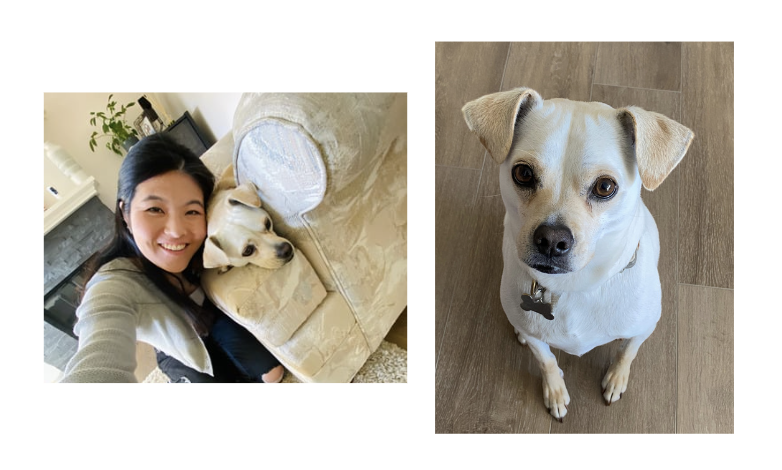

Animal Shelter Outcome Predictions

Table of Contents
Project Overview
The Data
Data Preparation and Feature Engineering
Modeling
Results
Future Directions
For a video walkthrough of my project, please see this youtube video.
Project Overview
According to the ASPCA, pet adoption rates skyrocketed across the United States during the COVID-19 pandemic, with nearly 1 in 5 American households adopting a new furry friend into their family. My family was among those who adopted a new pet during the pandemic - in August 2020, we adopted my bestie, Bolt!

We got Bolt at 3 months old from a US-based organization that rescues dogs from Mexico. With so many other families looking for puppies, I spent hours scouring listings on a popular platform, Petfinder and quickly noticed the vast differences in quality of listings on the site. I felt that for a lot of these animals, simply having a better quality profile could improve their chances of adoption.
The goal for this project was to build a machine learning model that can predict adoption outcomes for shelter/rescue animals based on their adoption profiles. Ultimately this model could be used by rescues and shelters to optimize animal profiles, giving them the best chance of finding their fur-ever families, just like Bolt.
The Data
The data used for this project was collected by the Austin Animal Center and is publically available on kaggle.
The dataset contains information for over 50,000 shelter animals (predominantly dogs and cats) with 13 variables:
- age_upon_outcome: the age of the animal when it left the shelter.
- animal_id: identification number for the animal.
- animal_type: type of animal (dog, cat, other).
- breed: breed of the animal (if known).
- color: dominant color of the animal.
- date_of_birth: birthdate of the animal (if known).
- datetime: date/time that the animal entered the shelter.
- monthyear: similar to datetime but without the time.
- name: name of the animal (if it exists - many animals don’t even have names).
- fixed_status: fixed status of the animal (Spayed, Neutered, Intact).
- gender: gender of the animal.
- outcome_subtype: subcategories for the shelter animal outcomes.
- outcome_type (variable to predict): the outcome of the animal when it left the shelter (outcomes include Adoption, Transferred, Died, Euthanasia 😟 ).
Data Preparation / Feature Engineering
Prior to modeling, the data needed to be cleaned and prepared. The major steps are outlined below but for more details, please see the notebook in my project repository on GitHub.
To start, I separated out the outcome variable of interest from the rest of the variables so that they could be prepared separately. To prepare the outcome variable, I used an encoder from sklearn’s preprocessing module to convert the categorical shelter animal outcome variable into numerical labels
Prior to modeling, the predictor variables needed to be transformed to make more usable by the models downstream. I used sklearn’s pipeline module, which allows you to make individual pipelines for each variable which can then be combined into one seamless preprocessing pipeline. Data imputation and transformations were applied to the variables of interest.
Modeling
Before modeling, I split the data into an 80/20 split - a random 80% of the data was used for training the models while the other 20% was witheld to evaluate and compare the models. For this project, I evaluated and compared 3 different candidate classifier models:
- Random Forest Classifier
- Ridge Classifier
- Multi-class Logistic Regression
I utilized a Randomized Cross Validation method from sklearn’s model selection module to fit and compare the candidate models. One advantage of this method over a regular grid search is that the hyperparameter search is optimized - only a sample, rather than all, of the hyperparameter combinations are compared. With multiple candidate models and hyperparameters to tune, the number of models to run can quickly scale - this method saves a lot of computing power.
Results
After a 5-fold cross validation, the best performing model was a Random Forest Classifier with the following hyperparameters:
- max_depth=10 (the maximum depth that each tree in the forest model can be expanded to)
- min_samples_leaf=4 (the minimum number of samples that any leaf node can contain - keeps the model from getting too specific)
- min_samples_split=3 (the mininum number of samples required at any of the internal (non-leaf) nodes)
- n_estimators=150 (the number of trees in the forest model)
To evaluate the models, I considered 2 different evaluation metrics, accuracy and the F1 score. Accuracy, which is a little easier to understand as it is simply the percentage of classificatons that are correct. The random forest model attained a 77.5% accuracy on the witheld test dataset. The F1 score gives us more insight into how the model is specifically performing on the different outcome types; specifically, it is the precision to recall ratio. The model got a F1 score of 0.237, indicating that the precision and recall of the model is not good.
Future Directions
In future iterations of this project, I would like to:
- perform a feature importance analysis to automate the variable selection process, ,making it more robust.
- combine the outcome variable values into broader categories such as positive and negative outcomes. This would hopefully salvage some of the observations that were incorrectly classified into very similar outcome types (eg. Died misclassified as Euthanasia).
- leverage NLP methods, which would allow me to use previously ignored variables such as breed and fur color.
With further improvements, this model could be very useful in the animal welfare sectors. Thousands of dogs and cats are registered in rescue/shelter/pound systems each year. Many of these animals are fortunate enough to find forever homes but others are not so lucky. According the the ASPCA, over 1.5 million shelter animals are euthanized each year due to overcapacity. To help lower this number, this model could be used as a way to evaluate shelter animal adoption profiles to optimize their chance of finding a family of their own.